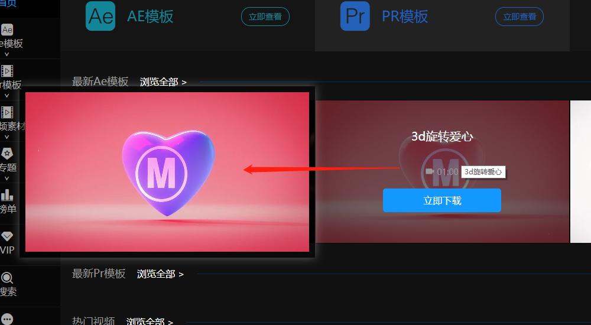

原文出处:本文由博客园博主前端MRzhu提供。
原文连接:https://www.cnblogs.com/mrzll/p/10671023.html
原文连接:https://www.cnblogs.com/mrzll/p/10671023.html
网站项目经常会遇到一些视频或者图片素材的展示功能，那么就需要自己写一个功能，就是在一些列表页面你想要是这个数据的详细内容，弹框在页面某个位置
例如这是视频悬浮展示效果，可自定义自动播放等属性标签

又例如这是图片悬浮展示，可控制悬浮展示与不展示

像上面这样或者一些其他列表做的一些悬浮弹框展示等，都可以自定义完成。
那这样的插件需要怎么调用呢？
// 插件的调用
// dom 是父元素调用
$(dom).scaleTools({
item: 'li', // 这是子元素，可以为多个 ，元素需定义data-src属性与值，为弹框展示提供数据
fade: true, // 显示方式
conCallback(src) { // 这边是生成的展示内容标签，默认是img
return '<video autoplay muted loop><source src="'+ src +'"></video>' // 这边是已视频为例子
}
})
// 一些其他参数
{
checkbtn: ' ', // 这是提供控制是否弹框的按钮元素
followScroll: true, // 弹框根据元素位置固定或根据窗口位置固定，默认根据鼠标悬浮元素
fadeTime: 500, // 生成弹框间隔时间，默认鼠标悬浮后500毫秒后展示
oftX: 0, // 水平方向距离悬浮元素间距
oftYPosition: 'center', // 生成弹框与元素垂直方向中心点对齐， 其他参数'top', 'bottom'
}
上面的一些调用参数就是插件全部接受的自定义数据，如果有其他特有的需求可以自己读懂源码再去修改，或者给我留言，我去添加，下面就是方法的定义：
;(function($, win) {
const PLUGINNAME = 'scaleTools'; // 定义插件名
let defaultOpts = { // 默认参数
item: '.item',
checkbtn: '',
fade: false,
followScroll: true,
fadeTime: 500,
oftX: 0,
oftYPosition: 'center', // 'top', 'bottom'
conCallback: false
};
class Plugin {
constructor(wrap, opts) {
this.wrap = $(wrap);
this.opts = $.extend(true, {}, defaultOpts, opts); // 合并用户参数
this.items = this.wrap.children(this.opts.item);
this.isShown = false;
this.timer;
this.checkShow = false;
this.init();
}
init() {
this.getSize() // 获取窗口大小
this.initEvent() // 初始事件
}
initEvent() {
this.wrap
.on('mouseenter', this.opts.item, this.timeInterval.bind(this)) // 父元素委托鼠标进入事件
.on('mouseleave', this.opts.item, this.unbindScale.bind(this)); // 鼠标离开事件
$(win).on('resize', this.getSize.bind(this)); // 窗口改变重新获取
$(win).on('scroll', this.changeScrollTop.bind(this)); // 窗口滚动事件
if(!!this.opts.checkbtn) { // 是否存在插件开关
$(this.opts.checkbtn).on('click', (e)=> {
this.checkShowFn(); // 切换弹框是否悬浮展示
})
}
}
getSize() {
this.winH = $(window).height();
this.winW = $(window).width();
}
initTool(e) {
let html = '<div class="scaleTool"><div class="tool-content">{ inner }</div></div>', // 初始弹框容器， 样式自己在样式文件写
str = '',
src = $(e.target).closest(this.opts.item).data('src') || $(e.target).closest(this.opts.item).find('img').attr('src'); // 获取悬浮元素 需要展示的数据src ，图片或者视频， 如果其他可不填
if(!this.opts.conCallback) {
str = '<img src="'+ src +'" />'
}else {
str = this.opts.conCallback(src)
};
if($('.scaleTool').length) { // 存在弹框
this.toolDom = $('.scaleTool'); // 重新赋值
this.toolDom.find('.tool-content').html(str); // 修改内容
} else {
html = html.replace('{ inner }', str); // 填入内容
$('body').append(html); // 加入页面
this.toolDom = $('.scaleTool'); // 初始声明
}
}
checkShowFn() { // 是否弹框开关
this.checkShow = !this.checkShow;
if(this.checkShow) {
$(this.opts.checkbtn).addClass('active') // 为开关添加类名自定义样式
} else {
$(this.opts.checkbtn).removeClass('active');
this.toolDom.remove();
}
}
unbindScale() { // 鼠标离开
clearTimeout(this.timer);
if(this.toolDom && (this.checkShow || !this.opts.checkbtn)) {
this.opts.conCallback && this.toolDom.find('video')[0].pause();
this.toolDom.hide();
this.isShown = false
}
}
// 鼠标进入
timeInterval(event) {
if(this.checkShow || !this.opts.checkbtn) {
this.timer = setTimeout(()=>{
this.showScale(event);
}, this.opts.fadeTime)
}
}
showScale(e) {
clearTimeout(this.timer);
if(this.isShown || this.winW < 1200) return; // 页面窗口小于1200 或者正在显示弹框 return
this.initTool(e);
let itemW = this.toolDom.width(),
itemH = this.toolDom.height(),
curX, curY,
$curBox = $(e.target).closest(this.opts.item);
// 获取当前悬浮元素的一些位置信息，对弹框位置的定义
let box = $curBox.get(0).getBoundingClientRect();
if(box.right > this.winW / 2) {
curX = box.left - itemW - this.opts.oftX
} else {
curX = box.right + this.opts.oftX
}
if(this.opts.oftYPosition === 'top') {
if(box.top < itemH) {
if(box.top < 0) {
curY = 0
} else {
curY = box.top
}
} else {
curY = box.top - itemH
}
} else if(this.opts.oftYPosition === 'bottom') {
if(this.winH - box.bottom > itemH) {
curY = box.bottom
} else {
curY = this.winH - itemH
}
} else {
if((box.top + $curBox.outerHeight() / 2) < itemH / 2) {
if(box.top < 0) {
curY = 0
} else {
curY = box.top
}
} else {
if((box.bottom - $curBox.outerHeight() / 2) > (this.winH - itemH / 2)) {
curY = this.winH - itemH
} else {
curY = box.top + $curBox.outerHeight() / 2 - itemH / 2
}
}
}
this.scrollH = $(win).scrollTop();
this.toolDom.css({
left: curX,
top: curY
});
this.toolT = curY;
// 展示方式
if(this.opts.fade) {
this.toolDom.fadeIn()
} else {
this.toolDom.show()
}
this.playVideo()
this.isShown = true
}
changeScrollTop(e) { // 根据滚动高度修改弹框位置
let scrollT = $(e.target).scrollTop(),
reScrollT = this.scrollH,
itemT = this.toolT,
newScrollT;
if(this.opts.followScroll && this.isShown) {
newScrollT = reScrollT - scrollT;
this.toolDom.css({
top: itemT + newScrollT,
});
}
}
playVideo() { // 视频播放
setTimeout(()=> {
this.opts.conCallback && this.toolDom.find('video').get(0).play()
}, 0)
}
}
$.fn[PLUGINNAME] = function(options) {
this.each(function() {
if (!$.data(this, "plugin_" + PLUGINNAME)) {
$.data(this, "plugin_" + PLUGINNAME, new Plugin(this, options));
}
});
return this;
};
})(jQuery, window);
上面则是全部插件方法定义了，公司项目网站www.macdown.com, 这个插件主要用在视频与素材板块，即v.macdown.com的整站与sc.macdown.com的图库分类， 如果有兴趣可以来网站看一下效果
有很多不足希望能够指出，学习进步，互相关注，谢谢~